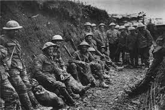

A primeira gurra mundial começou no dia 28 de Julho de 1914 e terminou dia 11 de Novembro de 1918 a causa da gurra , as tensões entre a Tríplice Entente (também conhecida por Aliados) e a Tríplice Aliança (também conhecida por Potências Centrais) inflamaram-se com o assassinato do arquiduque Franz Ferdinand, herdeiro do trono Austro-Húngaro, por um nacionalista sérvio bósnio, como acabou a guerra?Acabou-se a guerra?" O carro dos negociadores alemães que, vindo da Bélgica, atravessou a fronteira da França em 6 de novembro de 1918 espalhou o júbilo entre os soldados franceses. Os exércitos ainda se confrontavam, mas a guerra que já durava mais de quatro anos parecia estar se aproximando do fim,Talvez os políticos vindos de Berlim até trouxessem consigo alguns cigarros, um gostinho da futura paz? O líder da delegação Alemã, Matthias Erzberger, teve que desiludir os combatentes: "Como não fumante, eu não pude realizar a vontade deles", relatou em seu livro de memórias. No entanto, pouco mais tarde, na madrugada de 11 de novembro, ele e sua contraparte francesa, o marechal Ferdinand Foch, preencheriam plenamente os anseios de milhões de europeus. Morte em escalaindustria,Até chegar à trégua de 11 de novembro, a Europa atravessara quatro anos de uma pavorosa carnificina e destruição jamais vista. Em sua viagem pela Bélgica e França, Erzberger registrou um quadro de desolação: "Nenhuma casa mais de pé, uma ruína se sucedia à outra. À luz da lua, os destroços se erguiam no ar, fantasmagóricos; nenhum ser vivo se mostrava." O cronista e político do Partido Alemão do Centro traçou o balanço de uma guerra de letalidade sem precedentes. O avanço tecnológico e a industrialização haviam criado um arsenal que suplantava tudo o que já existira em termos de quantidade e qualidade: tanques aparentemente indestrutíveis, embarcações que manobravam debaixo d'água, artilharia de alcance gigantesco, gases mortais. Em 1916, os alemães haviam colocado em ação o canhão ferroviário "Langer Max": lançados através de um tubo de 35 metros de comprimento, seus projéteis de 300 quilos atravessavam distâncias de até 48 quilômetros. Com essa arma, Paris foi alvejada em 23 de março de 1918. Algumas granadas atingiram a igreja de Saint Gervais durante um culto, matando 88 pessoas e ferindo cerca de 100. Historiógrafos militares estimam que, durante a Primeira Guerra Mundial, se lançaram 850 milhões de granadas de artilharia. Ao todo, as nações envolvidas convocaram quase 56 milhões de recrutas. A matança se deu em escala industrial, com cerca de 11 milhões de soldados tombando sob a chuva de projéteis de canhões e o fogo de metralhadoras – uma média de 6 mil combatentes mortos por dia de conflito. A esses se juntaram 21 milhões de feridos, soldados que perderam membros ou parte deles, que ficaram paralíticos ou acamados, foram submetidos a amputações, terminaram cegos ou surdos.
